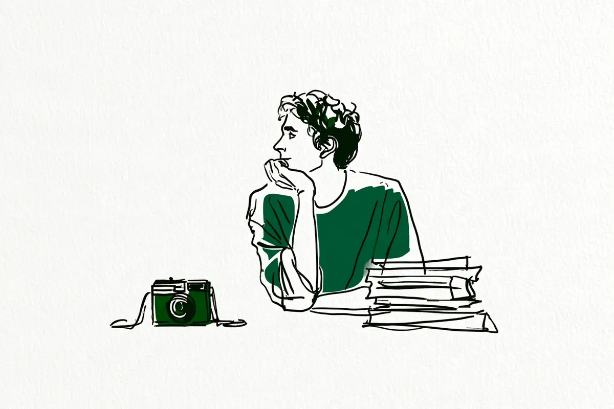
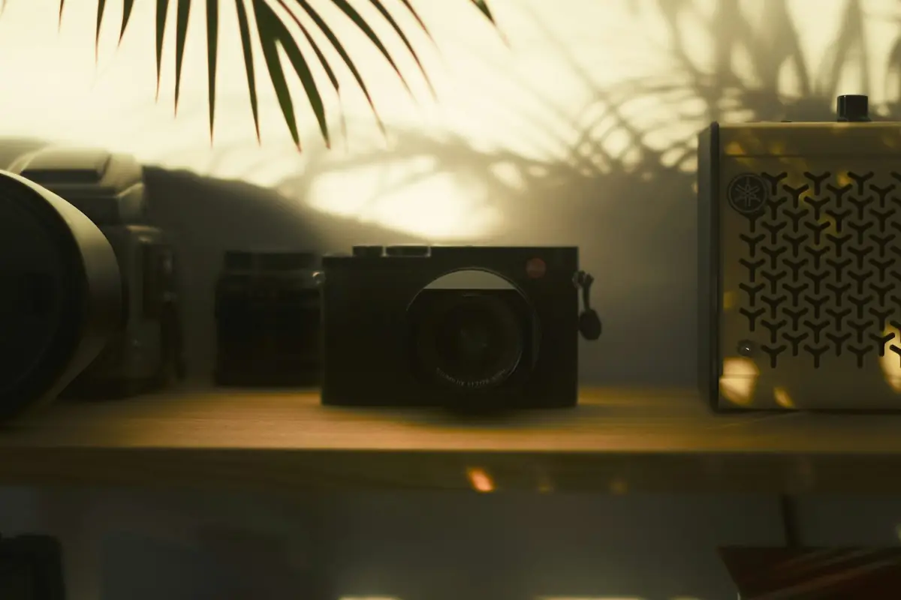

この記事には広告(アフィリエイトリンク)が含まれます。
現在地: 買う前に迷ってる
一眼レフを買ったけど後悔…体験談で目立ったのは性能以外の理由

一眼レフやミラーレスを買って後悔した人の体験談を読んでいくと、性能が足りなかったという話は少なく、買った時の気持ちや、暮らしとの合い方の話が目立ちました。買うか迷っている人にも、買ってしまって迷っている人にも向けて、体験談と一般論の記事を合わせて11件、理由を分けて数えました。
先に正直に書いておくと、私はカメラを持っていません。なので「私が使ってみたら」という話は出てきません。書いてあるのは、私が読んだ他の人の声と、その整理だけです。
読んだ11件の内訳です。
- 買って後悔した、または使わなくなった本人の体験談: 3件(Yahoo!知恵袋の相談2件、noteのすぎっちさん)
- 後悔しかけて機材を変え、続けている人: 1件(ヒガシーサーさん)
- 逆に、手放して後悔した人: 1件(YM.さん)
- 続けている人の意見記事: 2件(ゆるカメライフのmeguさん、じぶんカメラのフォトあさん)
- 機種紹介の記事: 1件(noteのma_koさん)
- 購入相談の掲示板: 1件(価格.com)
- カメラレンタル事業者が運営するメディア: 2件(SUUTA Magazine、GOOPASS MAGAZINE)
事業者の記事と個人の体験談は、この記事の中で区別しています。読む順番の案内です。
- まだ買う前の人 → 理由ごとの声のあと、「買う前に確かめておきたいこと」へ
- もう買って迷っている人 → 「もう買って後悔している人へ」と「買う・買わないの間にある選択肢」へ
後悔の理由の数え方と、まとめ表
体験談は「人」単位で数えました。対象は、買って後悔した、または使わなくなった本人だけです。事業者・一般論の列は「記事」単位なので、2つの列は単位が違います。
| 後悔の理由 | 体験談(8人中) | 事業者・一般論(7記事中) | 例(誰がどうしたか) |
|---|---|---|---|
| 買った時の気持ち(憧れ・ブーム・何となく・理想を背負わせた) | 4 | 1 | すぎっちさんは理想をカメラに背負わせ、手放した/知恵袋の回答者はブームに乗って買い、売った |
| 重い・大きくて持ち出さない | 4 | 4 | 知恵袋の質問者は半年ほどで後悔し、小さいカメラに傾いた(2017年)/ヒガシーサーさんは一回り小さいセンサーの機種に戻した |
| 機種が合わなかった(用途・操作性・機能・レンズの規格・中古) | 3 | 5 | ヒガシーサーさんはレンズの規格を替えて損をした/知恵袋の回答者は操作しにくく、置いたまま |
| 価格・追加出費(レンズ・総額) | 2 | 5 | 知恵袋の質問者はレンズを買い足す余裕がなかった |
| 撮るものがなくなった・生活が変わった | 2 | 3 | 知恵袋の回答者はロードバイクを始めて売った/別の回答者は就職後に軽いカメラを買い、使わなくなった |
| 人前で構えにくい | 1 | 1 | 知恵袋の質問者はスマホの感覚で構えられなかった |
| 思ったほどスマホと差がない・スマホで十分 | 0 | 4 | 後悔の理由として挙げた本人はなし(続けている人の自己申告は別枠) |
| 使いこなせない・設定が難しい・オートのまま | 0 | 5 | 体験談にはなし |
| 写真の管理・転送が手間 | 0 | 1 | 事業者の記事だけ |
数えた8人と、私がどの理由に入れたかの一覧です。分類は私の読み方なので、別の読み方もあると思います。
- 知恵袋①の質問者(2017年、一眼レフ): 気持ち(憧れ)・重い・機種(旅行向きではなかった)・価格・人前
- すぎっちさん(note): 気持ち(理想を背負わせた)
- 知恵袋②の回答者A(旅行用): 気持ち(ブーム)・重い(スマホの方が軽い)
- 知恵袋②の回答者B(2機種): 機種(操作性)
- 知恵袋②の回答者C(就職後): 重い・生活の変化 ※フィルムカメラ時代の話
- 知恵袋②の回答者D(ロードバイク): 生活の変化
- フォトあさん(じぶんカメラ): 気持ち(何となく) ※体験談は一文だけで、いまは続けている
- ヒガシーサーさん: 重い・機種(手ブレ補正・レンズの規格・中古)・価格 ※後悔しかけて機材を変え、続けている
別枠にしたのは、続けている人の自己申告(ヒガシーサーさんの、普段の記録の9割はスマホという話など)と、手放して後悔したYM.さんです。SUUTAの記事に埋め込まれたX(旧Twitter)の個人投稿5件は、元の投稿を確認していないので数えていません。8人ですから、数字の差に大きな意味はなく、この理由は出てきた、くらいの目安として見てください。
よく言われる後悔と、体験談で目立ったこと
数えてみて、私が意外だったのがここでした。
設定が難しくて使いこなせない、オートのままになる、といった後悔は、事業者や一般論の記事では7件中5件が挙げています。うち2件はレンタル事業者のメディアです。たとえばSUUTA Magazineの見出しは、こうです。
設定が複雑でオート撮影しか使えない
ところが、これを自分の後悔として書いた人は、読んだ範囲では見当たりませんでした。知恵袋の回答者に、操作しにくかったという声はあります。ただ、これは手に合わなかったという機種の話で、設定が難しかったという話ではないと私は読みました。
代わりに目立ったのが、買った時の気持ちに触れる人です。憧れで買った、ブームで買った、何となく買った、と振り返る人が8人中4人いました。ただし、気持ちそのものを後悔の原因だと書いているのは、すぎっちさん1人です。ほかの3人は、買った時の気持ちとして触れているだけで、後悔の中身は重さや値段でした。
これは8人を読んだ範囲の観察です。使いこなせなくて後悔した人が、そもそもネットに書いていないだけかもしれません。一人称の振り返りは気持ちを、まとめ記事は機能や設定を語りやすい、という書き方の違いかもしれません。
理由1. 憧れやブームで買って、気持ちがついてこなかった
カメラそのものより、買う前の気持ちに原因があった、という振り返りです。
noteのすぎっちさんは、レビューも実際に撮った写真の例も調べて慎重に選んだのに、使わなくなって手放した人です。買う前に信じていたことを、こう書いています。
「いいカメラを買えば、自然と撮るようになる」
そうならなかったあと、後悔の正体はこれだったそうです。
使わなかった自分に対する後悔だった。
持ち出さない日が続くたびに、カメラを見るのがつらくなっていったそうです。この経験のあと、どこに持ち出すか、どれくらいの頻度で触るか、使わない日があっても許せるかを考えて選ぶようになったと書かれています。
Yahoo!知恵袋の、ミラーレスを使わなくなった人に向けた質問(2024年)には、4人が自分の経験を答えています。そのうちの一人は、買った時の気持ちをこう振り返りました。
ブームにのっかって。あとは旅行用
この方は、たまに使ったあと、スマホの方が軽いという理由で売っています。2017年の知恵袋で一眼レフを買った質問者も、構えるかっこよさに憧れて買ったと振り返っていますが、後悔の中身は大きさと値段でした。
続けている人にも、同じ話がありました。じぶんカメラのフォトあさん(カメラや中古機材の紹介もしているサイトです)の記事のまとめに、こんな一文があります。
何となく使わなくなってしまいます。これは私の経験です。
一方で、憧れで買った人が全員後悔しているわけではありません。ゆるカメライフのmeguさん(写真の色を整える設定データも販売しているサイトです)は、自分はもっと早く買っておけばよかった側だと書いています。持ち歩きたいという憧れや直感がある人は続く、というのが、この一般論の記事での見方でした。
理由2. 重くて持ち出さなくなった
どちらの側にも出てきた理由です。重さの話はカメラ趣味はやめとけ?の記事でも詳しく扱ったので、ここでは買った直後の声に絞ります。
2017年の知恵袋の質問者は、恋人ができて遠出が増えたのをきっかけに、一眼レフ(鏡を使ってのぞくタイプのカメラ。言葉の意味)を買った人です。後悔の中身はこうでした。
しかし大きいし、見た目もゴツくてスマホで写真を撮る感覚でカメラを構えきれません。
写真より旅行が主役だったので、ミラーレス(光を受け止める板(センサー)が見た映像を、画面でのぞくタイプ)がよかったと後悔しています。やり取りの最後には、レンズ交換のできない小型のカメラ(コンデジ)が一番よさそう、という結論になりました。2017年の話なので、いまの事情とは違う部分があると思います。
ヒガシーサーさん(写真プリントやフォトブックの案内もしているサイトです)は、後悔しかけて機材を変えた人です。フルサイズ(センサーが大きい規格。言葉の意味)の機種に憧れて買い、重さで持ち出さなくなったのが自分の失敗だそうです。そのあとの選択がこれです。
結局いまはAPS-Cのα6700に戻して3年目です。
APS-Cは、フルサイズより一回り小さいセンサーの規格です。一般に小さく作りやすいと言われますが、実際の重さは機種によって違います。APS-Cに戻して3年使い続けている、という一人の例です。
反対に、2017年の相談の回答者の一人は、写真を撮るのが楽しければ重さは気にならない、と書いていました。回答者1人の意見ですが、感じ方は人によって違う例として添えておきます。
理由3. 機種が合わなかった(操作・機能・レンズの規格・中古)
用途、操作性、機能、レンズの規格、中古の状態と、合わなかった中身がそれぞれ違う理由です。
知恵袋の2024年の相談では、同じメーカーのミラーレスを2機種買った人が、外で使ったら操作しにくかったと答えています。いまはほぼ使わないまま、防湿庫(カビを防ぐための保管庫)に入れているそうです。
ヒガシーサーさんは、8つの落とし穴のうち、自分がやった失敗をはっきり分けています。その中で最も痛かったのが、マウント(カメラ本体とレンズをつなぐ規格)を乗り換えたことでした。マウントが変わると、基本的にレンズは使い回せません。
後悔の本丸はボディの値段ではなく、この乗り換えコストです。
ボディはカメラ本体のことです。同じ方は、中古でも2回失敗しました。本体にタバコの匂いが染みついていて返品したこと、レンズに3か月ほどでカビが出たことです。それでも中古そのものは否定せず、状態をどこまで書く店かで選ぶ、という助言にしています。
もう1つ、いまも引きずっている失敗が、手ブレ補正(カメラが揺れた分を打ち消す仕組み。言葉の意味)です。サブ機(ZV-E10)は本体側に補正がなく、電子式やレンズ側の補正を使っても、歩きながらの動画では困っているそうです。
手ブレ補正には、レンズ内・本体(ボディ)内・電子式があり、どれが付いているかと効き方は機種とレンズの組み合わせで違います。また、効くのはカメラ側の揺れだけで、動いている人や物のブレは防げません。動画を撮るなら本体側の補正がほぼ必須、というのはヒガシーサーさんの意見で、必要かどうかは撮り方によって変わります。
理由4. 撮るものがなくなった・生活が変わった
買った時にはあった撮る理由が、あとからなくなるパターンです。
知恵袋の2024年の相談で、10年ほど前に一眼レフを買った人は、半年ほどは毎週末使っていたそうです。使わなくなったきっかけは、カメラではありませんでした。
ロードバイク乗るようになって邪魔で持ち歩かなくなりました。
この方はカメラを売りましたが、写真そのものはやめておらず、いまは軽いミラーレスを趣味と組み合わせて使っているそうです。同じ相談には、就職を機に軽いカメラを買い、本体だけで1キロあるフィルムの一眼レフを使わなくなった人もいました。
事業者や一般論の記事では、何を撮りたいのか分からないまま買った、が理由として挙がっています。体験談の側は、撮りたいものがなかったというより、生活が変わってなくなった、に近いのが違いでした。趣味そのものをやめた人・続けた人の声は、カメラ趣味はやめとけ?の記事にまとめています。
買う前に確かめておきたいこと(体験談を質問にしました)
体験談の人たちが振り返っていたことを、自分への質問に変えてみました。答えが出なくても、それ自体が1つの材料です。誰の振り返りから来たかを添えています。
- 憧れの先に、撮ってみたいものが1つ浮かぶか。 憧れやブームで買った人が8人中4人いました。憧れそのものは悪くないのですが、その先に撮りたいものがあったかどうかは、4人の話を読むと気になるところです。
- 使わない日が続いても、カメラを見て平気か。 すぎっちさんの後悔は、使わなかった自分に向いていました。毎日撮る前提を置かず、月に数回でも許せるかを先に考えてみる、という順番です。
- カバンに入れて出かける場面を、1つ思い浮かべてみる。 重さで持ち出さなくなった人が4人いました。ヒガシーサーさんは、持ち出さなかった日の写真は1枚も残らない、という考えから、写りより持ち出す回数を優先しています。
- スマホで困った瞬間が、1つ浮かぶか。 カメラを続けているヒガシーサーさんでも、普段の記録の9割はスマホだそうです。スマホとの差の話は、スマホで十分、一眼はいらない?の記事に譲ります。
- レンズまで入れた総額を、先に決めてみる。 レンズを買い足す余裕がなかった人が体験談にも、総額で考えるべきという声が一般論にもありました。ヒガシーサーさんは、本体とレンズ2本までで上限を決める派です。
- 店頭で手に取って、構えてみたか。 2017年の質問者は、大きさと見た目に後悔しました。同じ相談の回答者は、かさばるかは個人差なので店で実機を触る、と助言しています。
- 小さいカメラで足りないか、先に考えてみる。 2017年の質問者は、旅先の何気ない写真が中心ならコンデジで足りたかもしれない、と振り返っています。
- 生活が変わっても、持ち続けたいか。 新しい趣味や就職で使わなくなった人がいました。数年先の自分を少しだけ想像してみるのも、1つの材料です。
もう買って後悔している人へ:体験談の人たちがしたこと

もう買ってしまって迷っている人向けに、体験談の人たちがそのあとどうしたかを並べます。こういう道があった、という並べ方です。
まず、後悔がいつ来たかです。読んだ範囲では、こうでした。
- 2017年の知恵袋の質問者: 買って半年ほどで後悔が出てきた
- ロードバイクを始めた回答者: 半年は毎週末使い、そのあと持ち歩かなくなった
- 就職後に軽いカメラを買った回答者: 5年ほど使ったあと
- 知恵袋の別の回答者(周りの観察): やる気満々で買って、1年後には放置されている人もいる
読んだ4つの例では、どれも買った直後ではなく、半年から数年たってから来ていました。そのあとにした選択は、5通りありました。
軽い機種に替えた。 ロードバイクの回答者は、売ったあと、軽いミラーレスを趣味と組み合わせて使っています。ヒガシーサーさんは、フルサイズからAPS-Cに戻して3年目です。
普段は小さいカメラ、本気の日だけ一眼。 2017年の相談で、質問者はコンデジに傾きました。その相談のベストアンサーの方の使い方が、こうです。
ミラーレスを持っていますが、本気で撮るときにしか持っていきません。
一眼(レンズを付け替えられるカメラ。一眼レフとミラーレスの両方)を手放さず、出番を減らした形です。
売った。 2024年の相談では、4人のうち2人が売っています。ヒガシーサーさんは、使っていないなら早めに下取りに出したほうがよく、迷っている期間そのものが損だ、という考えです。
置いたまま。 4人のうち2人は、そのまま持っています。損した気分になるのが嫌でそのままの人もいる、と別の回答者が書いていました。
売って、後悔した。 正反対の声です。YM.さん(いくつものメーカーのカメラを買っては売ってきた方です)は、新しいカメラの資金のために、気に入っていた機材を下取りに出しては買い戻してきた人です。
新しいカメラを買う時、人は普段の３倍くらいバカになるのだ。
自分の失敗を振り返って書かれた一文です。いまはこう決めているそうです。
この時の後悔が、今の「安易にカメラを売らない」という姿勢に直結している。
早く手放したほうがいい、という声と、安易に手放さないほうがいい、という声の両方があります。使っていない理由が、もう撮らないなのか、いまは撮れないなのかで、答えが変わるのだと思います。
買う・買わないの間にある選択肢
買う前の人にも、買ったあとの人にも使える、間の選択肢です。
店頭で実機を触る(無料)。 2017年の知恵袋の回答者も、価格.comの購入相談でも、店で実機を触ってから決めることをすすめていました。大きさ、重さ、構えた時の見た目は、これでかなり分かります。
店頭では分からない持ち歩きを確かめたいなら、借りる。 何日か持ち歩けば、重さ、構えやすさ、操作の手触りまでは分かります。一方で、続くかどうか(気持ちや生活の変化)は、借りても分かりにくいと思います。後悔は半年後などに来ているからです。
読んだ記事の中では、レンタル事業者のメディア2件がすすめていて、価格.comで相談した人も検討していました。体験談の中に、借りてから決めた人はいませんでした。日単位で借りられるサービスと、月額で借りられるサービスがあるようです。
PRAPEXレンタル詳しく見る少し前のモデル(型落ち)や中古も候補に入れる。 ヒガシーサーさんは、中古での失敗を2回経験したうえで、状態をどこまで書く店かで選ぶことをすすめています。
使っていないなら、まず無料で相場を知る。 中古店の買取価格表を見たり、同じ機種が売れた価格を検索したりすれば、おおよその相場は分かります。これは一般的な方法で、読んだ記事の中にはありませんでした。査定だけ受けられるサービスもあり、売る・売らないを決めなくても、いくらになるかを知っておくと判断材料が1つ増えます。これも私からの提案です。
PR福ちゃん(カメラの無料査定)詳しく見るレンタルや買取の会社によって、条件や対象の機材は違います。対象外の機材や地域があるサービスもあります。査定後に売らない場合の送料やキャンセルの条件も、サービスごとに違います。利用する前に、それぞれの公式サイトで条件を確認してください。
まとめ:後悔した人が振り返っていたのは、性能より暮らしとの合い方でした
11件を読んで、体験談の後悔には、性能不足そのものが原因という話は少なかった、と感じました。憧れやブームで買った、重くて持ち出さなくなった、操作が手に合わなかった、生活が変わった。すぎっちさんの記事のタイトルにもあるとおり、後悔の理由が性能ではなかった人が目立ちました。
逆に、設定が難しくて使いこなせない、というよく言われる後悔を、自分の話として書いた人は見当たりませんでした。8人を読んだ範囲での観察で、そういう人がいないとは言えません。
後悔した人が全員カメラをやめたわけでもありません。売った人、軽い機種に替えた人、置いたままの人、手放して後悔した人がいます。買うか買わないかも、買ったあとどうするかも、あとから変えられます。
後悔の話を読んでも、買うのをやめる必要はないと思っています。自分の暮らしに合うかを確かめる材料として、使ってもらえたらうれしいです。私はカメラを持っていないので、人の声を集めて整理する側です。
この記事で読んだ11件
- Yahoo!知恵袋「一眼レフを買いましたが少し後悔が出てきました。」(立場: 質問者は買って後悔、ベストアンサーは続けている、2017年)
- SUUTA Magazine「一眼レフは結局使わない？よくある後悔の理由と買う前にできる対策」(立場: レンタル事業者、2026年)
- note(すぎっち)「カメラを買って後悔した理由は、性能じゃなかった」(立場: 買って後悔し、手放した、2026年)
- GOOPASS MAGAZINE「ミラーレス一眼カメラを購入して後悔する？理由と解決策を解説」(立場: レンタル事業者、2026年)
- note(ma_ko)「ミラーレス初心者が後悔しやすいのは、カメラ選びより「買った後」を考えていないから」(立場: 機種紹介の記事、一般論、2026年)
- ゆるカメライフ(megu)「カメラを買うか迷っている人に写真が趣味の私が伝えたいこと」(立場: 続けている、2018年公開・2021年更新)
- Yahoo!知恵袋「ミラーレスカメラを購入し使わなくなってしまった人に回答していただきたいです。」(立場: 回答者4人が使わなくなった本人、2024年)
- じぶんカメラ(フォトあ)「ミラーレスは後悔する？失敗と感じる3つの理由と、底力を引き出す撮影方法を検証。」(立場: 続けている、本文は一般論、2026年更新)
- ヒガシーサーのカメラノート「ミラーレスで後悔する8つの落とし穴｜買う前に潰す回避策」(立場: 後悔しかけて機材を変えた、続けている、2026年)
- YM-PHOTO BLOG(YM.)「手放して後悔したカメラ機材のはなし」(立場: 手放して後悔した、2023年)
- 価格.com クチコミ掲示板「今から一眼を新規購入する場合はミラーレスがお奨めでしょうか？」(立場: 購入相談、後悔の体験談ではない、2022年)
引用は2026-09-30時点で各ページを閲覧して確認しました。